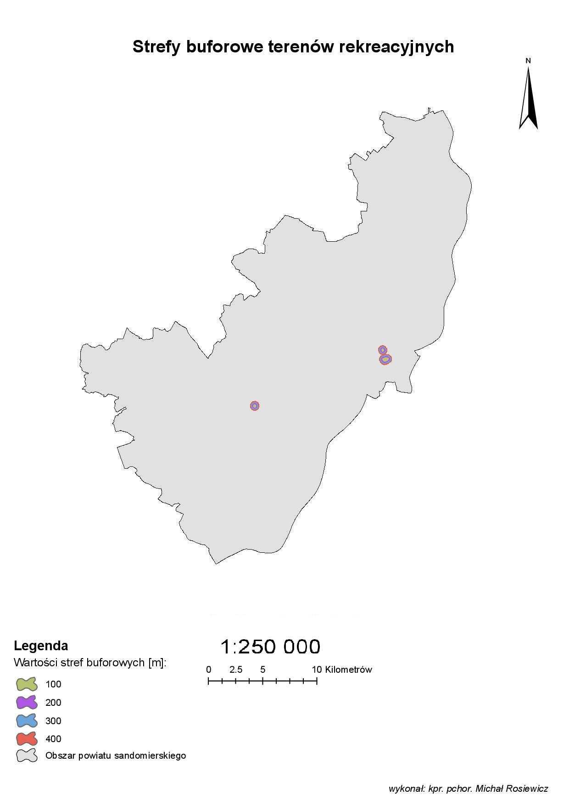

W celu przeprowadzenia analizy wielokryterialnej, określono następujące odległości stref buforowych, dla poszczególnych obiektów terenowych, mających wpływ na lokalizację nowej szkoły:
Cieki wodne: 150, 200, 250, 300 m,
Wody powierzchniowe:100, 200, 300, 400 m,
Drogi: 50, 100 m,
Koleje: 200, 300, 400 m,
Szkoły: 400, 600, 800 m,
Myjnie samochodowe: 500, 1000, 1200 m,
Cmentarze: 300, 400 m,
Tereny rekreacyjne: 100, 200, 300, 400 m,
Osiedla mieszkaniowe: 100, 200, 300, 400 m.
Poniżej przedstawiono wizualizację kątów nachylenia terenu oraz zasięgów stref buforowych dla wybranych obiektów terenowych, znajdujących się w rozpatrywanym obszarze.
Powyższa mapa spadków, przedstawia poziom nachylenia terenu w powiecie sandomierskim, wyrażony w procentach. Powiat sandomierski charakteryzuje się pod kątem ukształtowania powierzchni terenu jako obszar wyżynno-nizinny, w którym występują liczne wąwozy.
Powyższa mapa przedstawia strefy buforowe, utworzone dla dróg położonych w powiecie sandomierskim. Na podstawie mapy stwierdzić można, że sieć dróg miała duże znaczenie w procesie analizy wielokryterialnej, ponieważ jej strefy buforowe usytuowane są na obszarze całego powiatu. Strefy buforowe zostały utworzone w odległościach 50
i 100 metrów
Powyższa mapa przedstawia strefy buforowe dla cmentarzy. Miały one duży wpływ na wynik analizy wielokryterialnej, gdyż obszary wokół cmentarzy charakteryzują się ciszą i spokojem, co sprzyja efektywnej edukacji. Pożądana lokalizacja nowej szkoły miała znajdować się w zasięgu stref buforowych cmentarzy. Cmentarze są równomiernie rozłożone na obszarze całego powiatu. Zostały dla nich utworzone strefy buforowe
o zasięgach 300 i 400 metrów.
W tym przypadku przedstawione zostały strefy buforowe dla sieci kolejowej. Sieć kolejowa w powiecie sandomierskim jest słabo rozwinięta, o czym świadczy powyższa wizualizacja. Zostały utworzone strefy buforowe o zasięgach 200, 300 i 400 metrów. Bez wątpienia infrastruktura kolejowa miała niewielki wpływ na wynik końcowy analizy wielokryterialnej.
W obszarze opracowania znajdują się zaledwie dwie myjnie samochodowe, co można stwierdzić oceniając powyższą mapę. Na korzyść wyniku analizy wielokryterialnej - obiekty te miały niewielki wpływ na wynik końcowy, gdyż wyszukiwana lokalizacja dla nowej szkoły miała się znajdować poza zasięgiem ich stref buforowych. Założenie to spowodowane jest dużym ruchem pojazdów, w tym ciężarowych, które mogłyby stwarzać niekorzystne dla nieuważnych uczniów incydenty. Strefy buforowe określono dla odległości 500, 1000 i 1200 metrów od obiektów.
Powyższa mapa przedstawia strefy buforowe utworzone dla osiedli mieszkaniowych. Miały one duże znaczenie w analizie wielokryterialnej, gdyż w ich pobliżu miała zostać wyznaczona lokalizacja nowej szkoły. Osiedla mieszkaniowe występują w miastach, przez co ich obszar pokrywa znaczną mniejszość powierzchni powiatu sandomierskiego. Rozpatrywane obiekty usytuowane są głównie przy wschodniej granicy powiatu. Strefy buforowe zostały utworzone w odległościach 100, 200, 300 i 400 metrów.
Wykorzystane dane przedstawiają nieliczne szkoły dla powiatu sandomierskiego. Ich strefy buforowe przedstawia powyższa mapa. Większość z nich położona jest we wschodniej części rozpatrywanego obszaru, na terenie miasta Sandomierz. Strefy buforowe dla tych obiektów zostały wyznaczone dla odległości 400, 600 i 800 metrów.

Powyższa mapa przedstawia strefy buforowe terenów rekreacyjnych zajmujących stosunkowo małą powierzchnię w porównaniu do reszty uwzględnionych w analizie wielokryterialnej obiektów. Tereny te miały znaczący wpływ ze względu na fakt, iż lokalizacja dla nowej szkoły miała zostać wyznaczona w zasięgu stref buforowych terenów rekreacyjnych. Strefy buforowe zostały wyznaczone dla odległości 100, 200, 300 i 400 metrów od rozpatrywanych obiektów.
Powyższa mapa przedstawia strefy buforowe utworzone dla wód powierzchniowych. Strefy te charakteryzują się zasięgiem 100, 200, 300 i 400 metrów. Bufory utworzone dla tych obiektów miały duży wpływ na wynik analizy, gdyż jako woda powierzchniowa przedstawiona została Wisła. Ponadto zauważyć można, że w centralnej części powiatu położone są liczne zbiorniki wodne, które powiązane są z siecią cieków wodnych.
Powyższa mapa przedstawia strefy buforowe, utworzone dla cieków wodnych. Strefy te są położone w odległościach: 150, 200, 250, 300 metrów. Sieć rzeczna w powiecie sandomierskim jest dobrze rozwinięta, gdyż właśnie przez ten obszar przebiega największa rzeka Polski - Wisła. Strefy buforowe cieków wodnych bez wątpienia miały duży wpływ na analizę wielokryterialną.
Przeprowadzenie analizy wielokryterialnej, pozwoliło na otrzymanie wyników w postaci obszarów najbardziej korzystnych dla lokalizacji nowej szkoły. Istotne było opracowanie warunków, które otrzymany obszar miał spełniać. Wyznaczenie korzystnych obszarów, uwarunkowane było w zależności od odległości od zadanych obiektów terenowych. W związku z tym faktem, wzięto pod uwagę takie obiekty terenowe jak: obiekty hydrograficzne, sieć dróg, sieć kolejową, placówki edukacji, cmentarze, tereny rekreacyjne, osiedla mieszkaniowe a także myjnie samochodowe. Po przygotowaniu danych do opracowania, należało wykonać ciąg czynności, na które składały się: dopasowanie danych do obszaru opracowania, stworzenie stref buforowych, ograniczenie rozpatrywanych stref do granic powiatu, wprowadzenie wartości opisujących korzystne strefy oraz wygenerowanie rastra wynikowego.
Otrzymane w rezultacie analizy wielokryterialnej wyniki są jednoznaczne. Ze względu na określone przed analizą kryteria, wyznaczone obszary najkorzystniejsze, charakteryzują się małą powierzchnią. Pomimo tego faktu, obszary te pozwalają w pełni na wybudowanie tam nowej placówki edukacyjnej.